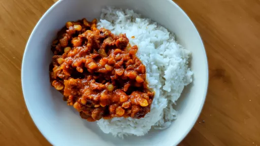

2 hr 50 mins
Serves 6-8
Middle Eastern
Iranian

Known as khoresh-e-gheymeh, this is one of the most popular stews of Iran and the great news is that it is one of the most simple to make.
Ingredients
3tbsp olive oil
2large onions, roughly diced
1kg boneless lamb neck fillets, sliced into 2.5 cm pieces
2heaped tsp turmeric
2generous pinches saffron threads
1heaped tsp ground cinnamon
150g tomato puree
sea salt flakes and freshly ground black pepper
8
Persian dried whole limes or preserved lemons
200g dried yellow split peas
Instructions
Set a large heavy-based saucepan over a medium heat, add the olive oil and diced onions and cook until the onions are softened, translucent and cooked through. Increase the temperature to high, add the lamb and fry the meat for about 5 minutes, stirring constantly to keep it moving and avoid stewing it.
Stir the turmeric into the mixture to give the meat an even coating of it. Do the same with the saffron and cinnamon, then add the tomato puree and a generous seasoning of sea salt flakes and black pepper, give the meat a good stir and cook for 1 minute.
Prick your dried limes several times with a fork, then add them to the meat. Add just enough cold water to barely cover the contents of the pan. Stir well, then reduce the heat to very low and slow cook the stew for 1½ hours. Add the yellow split peas, check the seasoning and cook for a further 1 hour. Serve the stew with basmati rice.